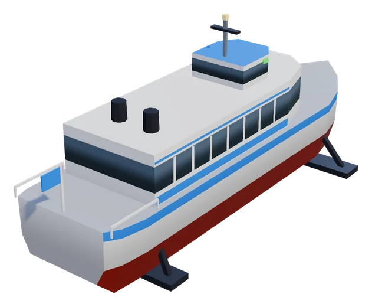

Navios
Todos os navios.
Lentos, espaçosos e baratos de operar. Os navios navegam entre docas.
 Gull Ferry1950 · 69 km/h
Gull Ferry1950 · 69 km/h Tern Freighter1950 · 60 km/h
Tern Freighter1950 · 60 km/h Petrel Tanker1950 · 63 km/h
Petrel Tanker1950 · 63 km/h Majestic Liner1958 · 78 km/h
Majestic Liner1958 · 78 km/h
Skimmer Hydrofoil1972 · 138 km/h Atlas Box Carrier1980 · 87 km/h
Atlas Box Carrier1980 · 87 km/h Granite Bulk Carrier1992 · 78 km/h
Granite Bulk Carrier1992 · 78 km/h Ripple Electric Ferry2020 · 117 km/h
Ripple Electric Ferry2020 · 117 km/h
| Modelo | Desde | Leva | Capacidade | Velocidade | Preço | Operação, por ano |
|---|---|---|---|---|---|---|
| Gull Ferry | 1950 | Passageiros, Correio | 110 | 69 km/h | $ 40.000 | $ 4.000 |
| Tern Freighter | 1950 | Qualquer carga a granel | 150 | 60 km/h | $ 55.000 | $ 5.500 |
| Petrel Tanker | 1950 | Petróleo | 230 | 63 km/h | $ 65.000 | $ 5.500 |
| Majestic Liner | 1958 | Passageiros, Correio | 300 | 78 km/h | $ 120.000 | $ 9.000 |
| Skimmer Hydrofoil | 1972 | Passageiros, Correio | 90 | 138 km/h | $ 72.000 | $ 5.200 |
| Atlas Box Carrier | 1980 | Qualquer carga a granel | 330 | 87 km/h | $ 92.000 | $ 6.200 |
| Granite Bulk Carrier | 1992 | Qualquer carga a granel | 420 | 78 km/h | $ 110.000 | $ 7.000 |
| Ripple Electric Ferry | 2020 | Passageiros, Correio | 130 | 117 km/h | $ 68.000 | $ 1.500 |
- Qualquer carga é toda carga menos passageiros, carros. Qualquer carga a granel também exclui correio, jornais.
- A vida útil deste tipo é de 30 anos: veja Envelhecimento e renovação.